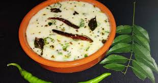

Back to Home
Pakhala Bhata

Description
Pakhala Bhata is a traditional Odia dish made with fermented rice and water. It is a popular summer dish in Odisha, known for its cooling properties and refreshing taste. Pakhala Bhata is typically served with accompaniments like fried or boiled vegetables, fish fry, and pickles.
The rice is soaked in water overnight, then fermented to create a slightly sour taste. It is a simple and nutritious dish that is perfect for hot summer days.
Ingredients
- 2 cups cooked rice
- 4 cups water
- 1/2 cup yogurt
- 1/2 teaspoon mustard seeds
- 1/2 teaspoon cumin seeds
- 1/2 teaspoon turmeric powder
- 1 green chili, chopped
- 1/2 inch ginger, grated
- 1 sprig curry leaves
- 2 tablespoons oil
- Salt to taste
- Fresh coriander leaves for garnishing
Steps
- Soak the cooked rice in water overnight.
- Drain the excess water and let the rice ferment for 8-10 hours.
- Whisk yogurt with water and mix it with the fermented rice.
- Heat oil in a pan, add mustard seeds, cumin seeds, green chili, ginger, and curry leaves.
- Add turmeric powder and salt, then pour this tempering over the rice.
- Garnish with fresh coriander leaves and serve with accompaniments.